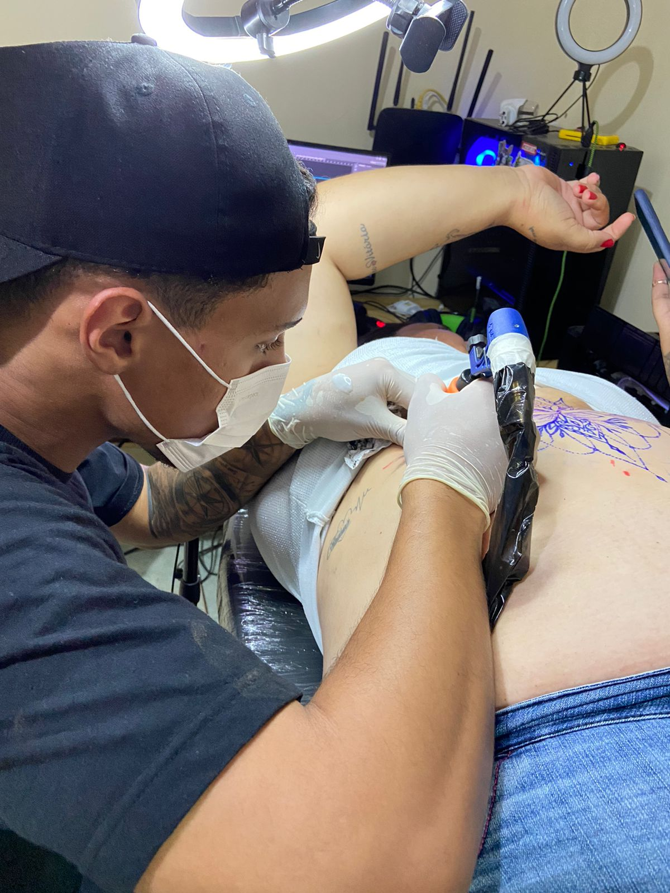

Galeria de trabalhos
Sobre

"Fazer uma tatuagem significa mostrar na pele o que se esconde
na alma"
Autor desconhecido
Tatuador em desenvolivmento
Estilo preferido: Realismo
O Realismo dentro da tatuagem se baseia no movimento realista iniciado na França em
1850. O foco desse estilo é a representação verdadeira da imagem, sem tons de romantismo
ou ajustes para tornar
a imagem mais dramática. O contraste e sombra são muito valorizados nesse estilo.